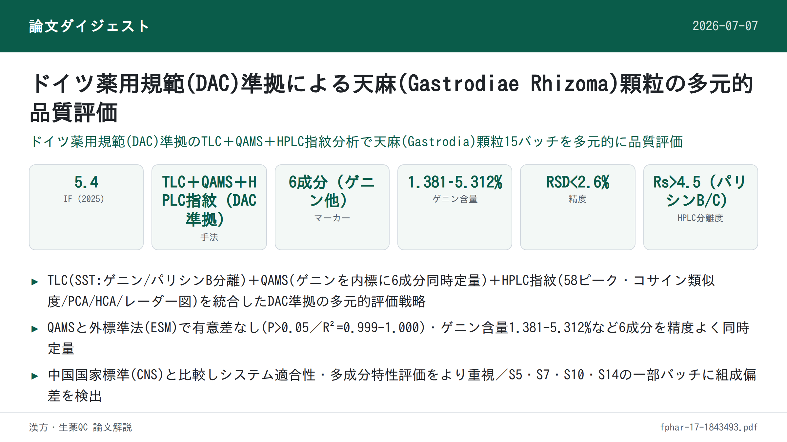
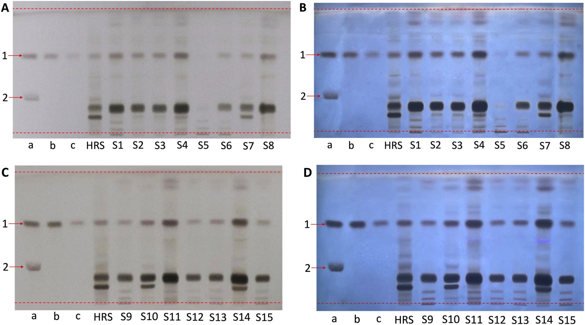
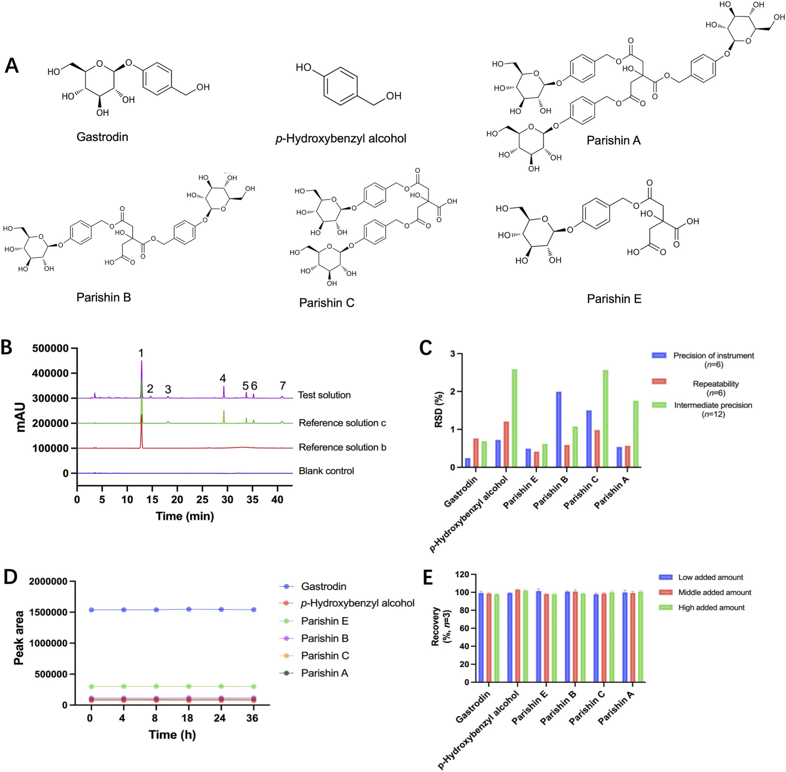
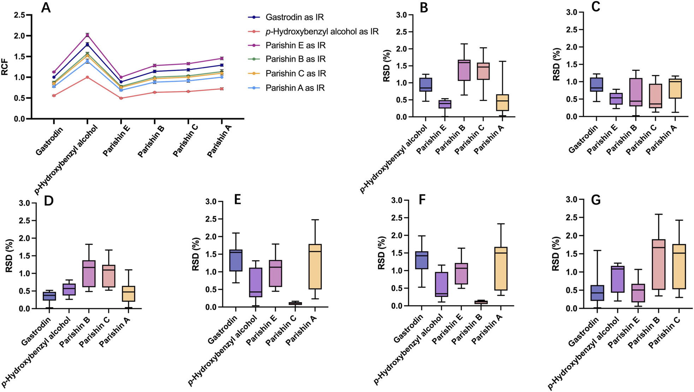
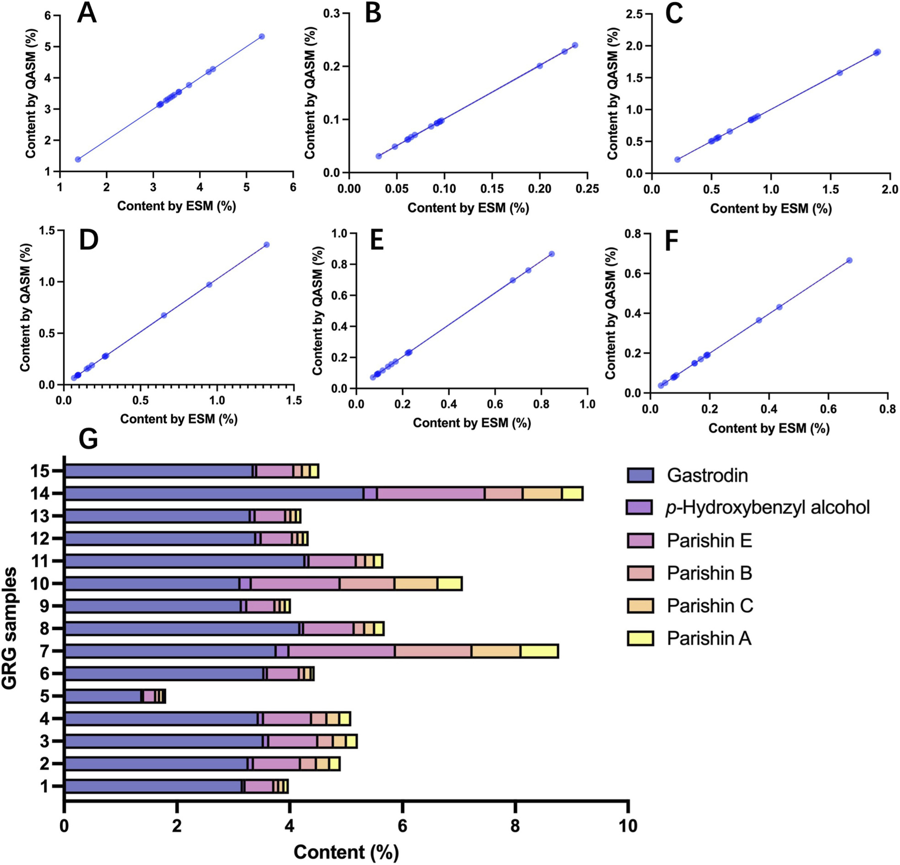
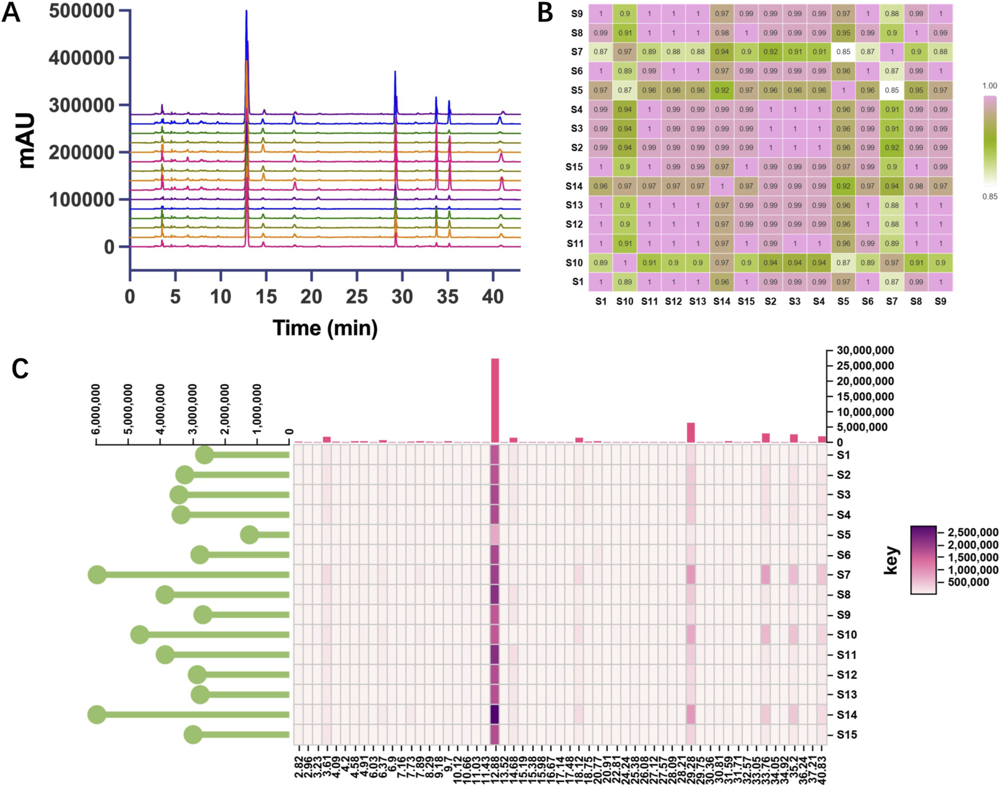
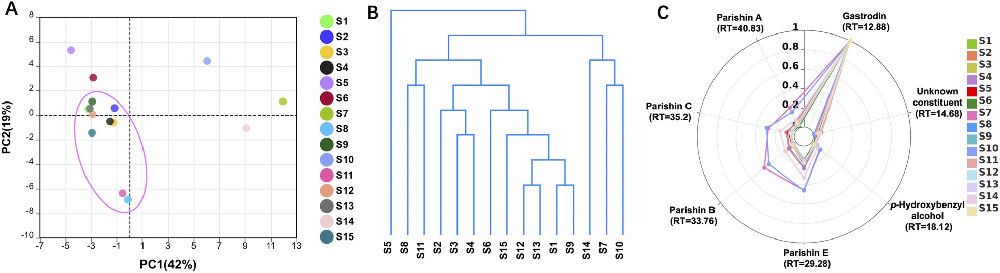

ドイツ薬用規範(DAC)準拠による天麻(Gastrodiae Rhizoma)顆粒の多元的品質評価

<!-- 方針: ほぼ全訳＋必要に応じた補足。原文の構成に沿って訳出。「> 補足:」は訳者注。 -->
書誌情報
- 原題: Deutscher Arzneimittel-Codex-aligned multi-dimensional quality assessment of Gastrodiae Rhizoma granules
- 著者・所属: Yin Xiong, Yiwei Wu, Xiaoyan Che, Xiuming Cui, Ryan Gene Hornbeck, Yuefei Geng, Ruoying Wu, Jin Tan, Yindi Zhu（温州医科大学中医学院；ライデン大学－欧州中医薬天然物センター；昆明理工大学；温州肯恩大学；好医生薬業集団, 中国・オランダ）
- 掲載: Frontiers in Pharmacology 17:1843493 (2026). https://doi.org/10.3389/fphar.2026.1843493（オープンアクセス, CC BY）
- インパクトファクター: 5.4（Frontiers in Pharmacology, JCR 2025 / Clarivate, 2026年6月公表）
- 受理経過: 受領 2026-03-31 / 改訂 2026-04-20 / 受理 2026-04-27 / 公開 2026-05-15
補足: GR = Gastrodiae Rhizoma（天麻, Gastrodia elata Blume の乾燥塊茎）。GRG = 天麻顆粒（Gastrodiae Rhizoma granules）。DAC = Deutscher Arzneimittel-Codex（ドイツ薬用規範。ドイツの薬事関連公定書）。EP = 欧州薬局方。CNS = 中国国家標準（YBZ-PFKL-2021122）。QAMS = 単一標準品による多成分同時定量法（quantitative analysis of multi-components by single marker）。ESM = 外部標準法（external standard method）。SST = システム適合性試験。IR = 内部標準（internal reference）。RCF = 相対補正係数。本論文は分析法開発・標準間比較の研究論文。
要旨（Abstract）
背景・目的: 再現性のある品質評価は、生薬顆粒製剤の標準化と国際的な同等性確保に不可欠である。天麻顆粒(GRG)は広く用いられる生薬製剤だが、各国公定書の要求事項に整合した分析戦略は限られている。本研究は、GRGの品質評価のためドイツ薬用規範(DAC)準拠の分析戦略を確立・評価し、中国国家標準(CNS)と比較することを目的とした。
方法: 薄層クロマトグラフィー(TLC)、単一標準品による多成分同時定量法(QAMS)、高速液体クロマトグラフィー(HPLC)指紋分析を統合した多元的分析アプローチをGRG向けに開発した。TLCはDACのシステム適合性(SST)要求に基づき評価した。ゲニン(gastrodin)を内部標準として、QAMSによりp-ヒドロキシベンジルアルコールおよびパリシンE・B・C・Aを同時定量した。HPLC指紋は15バッチのGRGについて確立し、コサイン類似度解析・主成分分析(PCA)・階層的クラスター分析(HCA)・レーダープロット可視化により評価した。
結果: TLC法はゲニンとパリシンBの明瞭な分離を達成し、DACのシステム適合性要求を満たした。QAMSの結果は外部標準法(ESM)と比較して有意差(P > 0.05)がなく、良好な正確さ・信頼性が示された。HPLC指紋分析は検討したバッチ間でおおむね一貫した化学プロファイルを示す一方、複数の試料でバッチ間変動も認められた。ケモメトリクス解析はバッチ間の全体的な類似性と局所的な不均一性の両方を裏づけた。中国国家標準と比較すると、DAC準拠戦略はクロマトグラフィーのシステム適合性と多成分特性評価により重点を置いていた。
結論: 本研究は、GRGの多元的品質評価のためのDAC準拠分析戦略の実現可能性を示し、標準間比較および生薬顆粒製剤の品質評価アプローチの調和のための有用な参考を提供する。
キーワード: Deutscher Arzneimittel-Codex; Gastrodiae Rhizoma granules; quality assessment; quantitative analysis of multi-components by single marker; system suitability test
1. 序論（Introduction）
中医学(TCM)顆粒は、飲片(decoction pieces)を出発原料とし、抽出・濃縮・分離・乾燥・造粒・包装という標準化された製造工程を経て作られる現代的な生薬製剤である。従来の煎じ薬(decoction)と比較して、保存・輸送のしやすさ、より正確な投与量、患者コンプライアンスの向上、より一貫した品質管理といった利点があり、臨床応用が拡大するとともに国際市場でも注目が高まっている。
こうした発展にもかかわらず、TCM顆粒の品質評価は、国・地域による規制枠組みと技術要求の違いにより課題を抱えている。特に品質指標・クロマトグラフィー要求・バリデーション基準のばらつきは、生薬医薬品の国際登録やより広い受容にとって実務上の障害となっている。ドイツ薬用規範(DAC)は、ドイツにおける医薬品・生薬出発原料の品質評価に用いられる重要な公定書・技術参照基準である。生薬分析の文脈において、DAC指向の要求は欧州薬局方(EP)様式の品質期待とおおむね整合しており、クロマトグラフィーのシステム適合性、規定された標準品、バッチ間の一貫性評価を特に重視する。したがって、国際使用を意図した中国産生薬顆粒製剤の特性評価・品質評価に対して、より厳格な要求を課しうる。
天麻(GR, 中国語で天麻)はGastrodia elata Blumeの乾燥塊茎であり、頭痛・めまい・痙攣性疾患などに古くから用いられてきた著名な生薬である。植物化学的・薬理学的研究により、その主要な生理活性成分であるゲニン(gastrodin)、p-ヒドロキシベンジルアルコール、パリシン類が、品質評価上の重要なマーカー成分として広く認識されている。現代の臨床ニーズに応えるため、GRはTCM顆粒剤形として開発され、煎じ用飲片に代わる剤形として中国国家標準(CNS, YBZ-PFKL-2021122)に収載されている。現行のCNSはGRGの品質管理の基本的枠組みを提供するが、システム適合性基準・標準品の使用・クロマトグラフィー特性評価の深度といった点でDAC指向の要求との間に差異が残る。これらの差異は、特に国際的な品質評価の文脈においてGRGの標準間評価を複雑にする。
こうした背景から、本研究はGRGの品質評価のためのDAC準拠分析枠組みの開発・評価を目的とする。ここでの「DAC準拠(DAC-aligned)」とは、GRGに対する法的拘束力のある登録基準の直接実装ではなく、DAC/EP様式の期待に整合する分析要素の採用を指す。本戦略は、特徴的成分同定のための薄層クロマトグラフィー(TLC)、マーカー成分の同時定量のための単一標準品による多成分同時定量法(QAMS)、化学的一貫性評価のための高速液体クロマトグラフィー(HPLC)指紋分析を統合した。提案アプローチは、分析要求・品質指標・方法論的特徴の観点から現行CNSとさらに比較検討した。本研究は、生薬顆粒製剤の標準間比較および品質評価アプローチの調和のための実務的な参考を提供する。
2. 材料と方法（Materials and Methods）
2.1 GRG試料
中国の異なるメーカーによる市販GRG15バッチを分析対象として収集した。GRGは天麻(GR、Gastrodia elata Blume, ラン科の乾燥塊茎)由来の顆粒製剤である。分析した全試料は、識別可能なロット番号・メーカー情報を有する市販製品であった。CNSによれば、GRGはGR飲片を煎じ・濃縮・乾燥・造粒し、必要に応じ賦形剤を加えて製造される。報告されている乾燥エキス収率14%〜25%に基づくと、原生薬・エキス比(DER native)はおよそ4.0〜7.1:1である。メーカー提供情報によれば、賦形剤を用いる場合はマルトデキストリンが一般的に用いられる。試料の詳細をTable 1に示す。
Table 1. 分析したGRG試料の情報
| 試料番号 | ロット番号 | メーカー |
|---|---|---|
| S1 | 1039192 | Guangdong Yifang Pharmaceutical Co., Ltd. |
| S2 | 1042132 | Guangdong Yifang Pharmaceutical Co., Ltd. |
| S3 | 1052223 | Guangdong Yifang Pharmaceutical Co., Ltd. |
| S4 | 1024412 | Guangdong Yifang Pharmaceutical Co., Ltd. |
| S5 | 2101001W | China Resources Sanjiu Medical & Pharmaceutical Co., Ltd. |
| S6 | 19045512 | Beijing Tcmages Pharmaceutical Co., Ltd. |
| S7 | 21060781 | Tianjiang Pharmaceutical Co., Ltd. |
| S8 | 0129181 | Guangdong Yifang Pharmaceutical Co., Ltd. |
| S9 | 0079081 | Guangdong Yifang Pharmaceutical Co., Ltd. |
| S10 | 1052221 | Guangdong Yifang Pharmaceutical Co., Ltd. |
| S11 | 0129171 | Guangdong Yifang Pharmaceutical Co., Ltd. |
| S12 | 0079101 | Guangdong Yifang Pharmaceutical Co., Ltd. |
| S13 | 0079091 | Guangdong Yifang Pharmaceutical Co., Ltd. |
| S14 | 20041371 | Tianjiang Pharmaceutical Co., Ltd. |
| S15 | 0049231 | Guangdong Yifang Pharmaceutical Co., Ltd. |
2.2 試薬
標準品ゲニン(no. 110807-202010, HPLC純度≥95.5%)およびp-ヒドロキシベンジルアルコール(no. 11970-201702, HPLC純度≥99.4%)、GRの生薬対照品(HRS, no. 120944-202112)は中国食品薬品検定研究院(北京)より購入。パリシンA(no. PRF20091710, ≥98%)、パリシンB(no. PRF21030901, ≥98%)、パリシンE(no. PRF20092841, ≥98%)はBiopurify Phytochemicals Ltd.(成都)より購入。パリシンC(no. D06N11S130122, ≥98%)は上海源葉生物科技(上海)より購入。アセトニトリルはHPLCグレード。その他試薬は分析グレード。
2.3 TLC同定
2.3.1 検液の調製: GRG 0.1 gを精密に量り、超音波抽出(200 W, 53 kHz, 30分)によりメタノール10 mLで抽出。濾過後、濾液を蒸発乾固し、残渣をメタノール0.5 mLに再溶解して検液とした。
2.3.2 HRS溶液の調製: GR生薬対照品(HRS)0.3 gを水8.0 mLで還流抽出(2時間)。抽出液を濾過し濾液を蒸発乾固。残渣をメタノール10.0 mLに溶解し超音波抽出(30分)。濾過後、濾液を再度蒸発乾固し、最終残渣をメタノール0.5 mLに溶解してHRS溶液とした。
2.3.3 標準溶液の調製:
- 標準溶液a(SST用): ゲニン2.0 mg・パリシンB 2.0 mgをメタノール1.0 mLに溶解した混合標準溶液。
- 標準溶液b: ゲニン2.0 mgをメタノール1.0 mLに溶解。
- 標準溶液c: 標準溶液b 0.25 mLをメタノールで1.0 mLに希釈(濃度0.5 mg/mL)。
2.3.4 クロマトグラフィー条件: シリカゲルプレート(Macherey-Nagel, 5×10 cm, 粒径5〜17 μm)。移動相はジクロロメタン:酢酸エチル:メタノール:水 = 2:4:2.5:1 (V/V/V/V)。各溶液4 μLを同一プレート上に幅8 mmのバンドとして塗布。非飽和チャンバー中で展開距離8 cmまで展開。風乾後、10%(V/V)硫酸エタノール溶液を噴霧し105 ℃で15分加熱。日光下および310 nm紫外光下でクロマトグラフィープロファイルを観察(310 nmは本条件下で特徴的バンドが最も明瞭に可視化されたため選択)。検液のクロマトグラムでは、HRSおよび標準溶液と位置・色調が対応するスポットが観察された。TLC系のSSTは標準溶液aを用いて評価した。
2.4 HPLC分析
2.4.1 検液の調製: GRG試料0.2 gを精密に量り、メタノール-水(30:70, V/V)混合溶媒25.0 mLで抽出。超音波処理(200 W, 53 kHz, 30分)後、室温まで冷却。再度秤量し、減少分を同溶媒で補正。十分に振とう・静置後、0.22 μmメンブレンフィルターで濾過し、濾液を検液とした。
2.4.2 標準溶液の調製:
- 標準溶液a(SST用): パリシンB・パリシンC各0.1 mgを同溶媒混合液10.0 mLに溶解。
- 標準溶液b: ゲニン2.0 mgをメタノール-水(30:70, V/V)10.0 mLに溶解。
- 標準溶液c: ゲニン2.0 mg、p-ヒドロキシベンジルアルコール0.06 mg、パリシンE 0.45 mg、パリシンB 0.13 mg、パリシンC 0.1 mg、パリシンA 0.1 mgをメタノール-水(30:70, V/V)10 mLに溶解。
2.4.3 クロマトグラフィー条件: 逆相C18-AQカラム(250 mm×4.6 mm, 5 μm)を用いたHPLCシステム。移動相A: 0.1%リン酸水溶液(V/V)、移動相B: アセトニトリル。グラジエント: 0〜16分 2%→6% B、16〜22分 6%→12% B、22〜35分 12%→18% B、35〜42分 18%→24% B、42〜43分 24%→95% B。流速1.0 mL/min。検出波長220 nm。注入量5 μL。
2.4.4 分析法バリデーション
- 特異性: ブランク溶媒・検液・標準溶液a・標準溶液cのクロマトグラムを比較(条件は2.4.3と同一)。標準品との保持時間比較によりピークを同定し、ブランクからの干渉は認められなかった。
- 精度(機器精度): 標準溶液cを6回連続注入し、各成分のピーク面積RSDを算出。
- 精度(再現性): 同一バッチ(S9)から独立に調製した検液6本を分析し、バッチ内一貫性を評価。
- 精度(室内再現精度): 同一バッチ(S9)から調製した検液12本を、異なる日・異なる分析者・異なる機器で分析。
- 安定性: バッチS9由来の検液を0, 4, 8, 18, 24, 36時間の時点で分析し、短期安定性を評価。
- 正確さ(回収率): バッチS9を用いた添加回収試験。3群(各群3反復)を調製し、各試料(GRG粉末0.125 g)に既知量の6標準品(ゲニン、p-ヒドロキシベンジルアルコール、パリシンE・B・C・A)を添加して回収率を算出。
- 直線性・範囲・LOD・LOQ: 混合標準溶液(ゲニン、p-ヒドロキシベンジルアルコール、パリシンE・B・C・A)の6濃度を調製・分析。各化合物の検量線を作成し決定係数(R²)を算出。感度はLOD・LOQで評価。
2.4.5 QAMSの開発
2.4.5.1 RCFの決定: QAMS法は既報(Li et al., 2019)を一部改変して開発した。ゲニン、p-ヒドロキシベンジルアルコール、パリシン類は、GRの特徴的構成成分でありクロマトグラフィー特性評価・品質評価・臨床効果に関連することから対象分析物として選定した。複数の化合物を内部標準(IR)候補として評価。RSDが低いこと、クロマトグラフィー挙動が安定していること、物理化学的性質が適していることに基づき、最終的なIRと相対補正係数(RCF)を選定した。
RCFは以下の式で算出した:
Fi/s = (Ai/Ci) / (As/Cs) = (Ai×Cs) / (As×Ci) …… 式(1)
（Fi/s: RCF、Ci・Cs: 分析対象成分・内標の濃度、Ai・As: それぞれの対応するピーク面積）
外部標準法(ESM)とQAMSの両方で各試料中の6成分を定量し、両者の結果をRSDを誤差指標として比較しQAMS法の妥当性を検証した。
2.4.5.2 GRG中6成分の定量:
Ci = (Ai×Cs) / (As×Fi/s) …… 式(2)
Wi = (Ci×V) / Ms × 100% …… 式(3)
（V: エキス化溶液の体積[mL]、Ms: 試料の質量[mg]）
2.4.6 HPLC指紋分析
2.4.6.1 HPLC指紋の確立と類似度評価: HPLC指紋分析により、市販GRG試料の全体的な化学プロファイルとバッチ間一貫性を評価した。保持時間(RT)許容差±0.2分でクロマトグラフィーピークのアラインメントを行い、バッチ間の微小なずれを補正した。フィンガープリント類似度解析のためRT範囲0〜43分で計58個のアラインメント済みピークを同定し、可視化・ケモメトリクス解釈には選定した特徴的ピークの一部を用いた。
アラインメント済みピーク面積に基づき各バッチの指紋プロファイルを確立。バッチ間類似度はコサイン類似度係数で定量的に評価した(1.00に近いほど類似度が高い)。バッチ間相関を可視化するため類似度ヒートマップを構築。さらに、全検出ピークの相対存在量を表示するピーク面積分布のヒートマップも作成し、バッチ間変動・外れ値の直感的評価を可能にした。
2.4.6.2 ケモメトリクス解析: 化学的一貫性の評価とバッチ分類支援のため、アラインメント済み指紋データ行列に多変量ケモメトリクス手法を適用した。
- 主成分分析(PCA): 次元削減と試料クラスタリングの可視化のため実施。第1・第2主成分(PC1, PC2)をプロットし、15バッチ間のグルーピングまたは逸脱を示した。
- 階層的クラスター分析(HCA): ユークリッド距離とWard法を用いてデンドログラムを構築し、化学プロファイル類似度に基づきバッチを分類。
- レーダープロット: 選定した特徴的構成成分の正規化ピーク分布を可視化。7つの特徴的ピーク(RT = 12.88, 14.68, 18.12, 29.28, 33.76, 35.20, 40.83分)を用いて作成。全レーダープロットは各バッチ内の最大ピーク面積で正規化し、総含量に依存しない相対的成分分布の指紋パターン比較を可能にした。
2.5 統計解析
データ処理・可視化はGraphPad Prism 9.3.1、IBM SPSS Statistics 26、Python 3.11を用いて実施。分析法バリデーションとケモメトリクス評価のため、RSD・Pearson相関・コサイン類似度・分離度を算出した。多変量データ解析は標準化ピーク面積行列を用いて実施した。
3. 結果（Results）
3.1 TLC同定
3.1.1 TLCのSST: ゲニンとパリシンBを含む混合標準溶液を用いてSSTを実施(Figure 1)。両化合物のRf値はそれぞれ約0.60と0.27であり、確立したクロマトグラフィー条件下で両バンドは明瞭に分離された。
3.1.2 GRG試料の同定: ゲニンをTLC同定の主要マーカーとし、2濃度のゲニン標準溶液を調製した。Figure 1に示すように、標準溶液とその1/4希釈液は明確に異なるバンド強度を示し、GR HRSは良好に分離された特徴的バンドを呈した。分析した全試料は、ゲニン標準バンドと位置的に対応するバンドを示し、大半の試料の主要バンドパターンはGR HRSと一致していた。
一部でバッチ間・メーカー間差も観察された。Guangdong Yifang Pharmaceutical社由来の大半の試料は概して類似したバンドパターンを示した一方、他メーカー由来の試料(例: S5〜S7, S14)は副次バンドの強度・分布にわずかな変動を示した。バッチS5は他の大半の試料と比べ、比較的弱いTLC応答を示した。

3.2 HPLC分析
3.2.1 HPLCのSST: 確立したクロマトグラフィー条件下で、パリシンBとパリシンCの分離度は4.5を超え、EP/DACガイドラインで規定される最低要求値1.5を大幅に上回った。
3.2.2 分析法バリデーション
特異性: 6標準品を含む標準溶液(Figure 2A)を特異性試験用に調製。Figure 2Bの結果、ブランク対照溶液のクロマトグラムに干渉ピークは認められなかった。標準溶液c中の6標準マーカーはすべて、それぞれの保持時間で明瞭かつ明確なピークを与えた。検液でも同位置に対応するピークが検出され、ピーク形状は良好で異常な不純物シグナルは観察されなかった。
精度:
- 機器精度: 標準溶液cを6回連続注入して評価。ゲニン、p-ヒドロキシベンジルアルコール、パリシンE、パリシンB、パリシンC、パリシンAのRSDはそれぞれ0.24%、0.73%、0.50%、2.00%、1.50%、0.54%(n=6)であった。
- 再現性: バッチS9から独立に調製した6検液で評価。同6成分のピーク面積RSDはそれぞれ0.76%、1.21%、0.42%、0.59%、0.98%、0.58%(n=6)であった。
- 室内再現精度: バッチS9から調製した12検液を、異なる日・技術者・機器で分析。同6成分のRSDはそれぞれ0.69%、2.59%、0.62%、1.08%、2.57%、1.76%(n=12)であった。
（機器精度・再現性・室内再現精度のRSD値はFigure 2Cに示す。）
安定性: バッチS9由来検液を0, 4, 8, 18, 24, 36時間で分析(Figure 2D)。同6成分のピーク面積RSDはそれぞれ0.27%、0.80%、0.54%、2.19%、1.65%、0.59%(n=6)であった。
正確さ: バッチS9を用いた回収試験。既知量の6分析対象(ゲニン、p-ヒドロキシベンジルアルコール、パリシンE・B・C・A)を試料に添加。Figure 2Eに示すとおり、6分析対象の回収率は許容範囲内であった。
補足: 原文本文には回収率の具体的な数値(%)は記載がなく、「許容範囲内」とのみ記述されている。詳細な数値はFigure 2E(原文図)参照。
直線性・範囲・LOD・LOQ: ゲニン、p-ヒドロキシベンジルアルコール、パリシンE・B・C・Aの混合標準溶液6濃度を調製・測定。各化合物の回帰式・直線範囲・LOD・LOQをTable 2に示す。各化合物の対応範囲内で良好な直線性が確認された。
Table 2. 6標準品の検量線・直線範囲・LOD・LOQ(n=6)
| 化合物 | 回帰式 | R² | 直線範囲(mg/mL) | LOD(mg/mL) | LOQ(mg/mL) |
|---|---|---|---|---|---|
| ゲニン | y = 6744078x + 24495 | 0.9995 | 0.02〜0.6 | 0.0163 | 0.0494 |
| p-ヒドロキシベンジルアルコール | y = 12307694x + 679.5 | 0.9997 | 0.0006〜0.018 | 0.0004 | 0.0012 |
| パリシンE | y = 6060054x + 2441 | 0.9996 | 0.0045〜0.135 | 0.0033 | 0.0099 |
| パリシンB | y = 8001789x − 672.8 | 0.9998 | 0.0013〜0.039 | 0.0006 | 0.0019 |
| パリシンC | y = 8268232x − 554.8 | 0.9995 | 0.001〜0.03 | 0.0008 | 0.0026 |
| パリシンA | y = 8728848x + 1,209 | 0.9998 | 0.001〜0.03 | 0.0006 | 0.0017 |

3.2.3 QAMSの開発
3.2.3.1 RCFの決定: 異なるIRについて式(1)に基づきRCFを算出するため、7濃度の成分溶液を調製した。Figure 3Aに示すように、ゲニン、p-ヒドロキシベンジルアルコール、パリシンE、パリシンB、パリシンC、パリシンAをそれぞれIRとした場合のRCFのRSDは、それぞれ1.30%〜2.92%、1.51%〜3.66%、1.30%〜2.50%、1.05%〜4.09%、1.04%〜3.92%、2.24%〜4.22%の範囲であった。
異なる成分をIRとした場合のESMとQAMSの比較結果(Figures 3B〜G)と合わせて検討すると、両手法間の差は有意ではなかった。最終的にゲニンをQAMS分析の内部標準(IR)として選定した。ゲニンをIRとした場合、p-ヒドロキシベンジルアルコール、パリシンE、パリシンB、パリシンC、パリシンAの平均RCFはそれぞれ0.5581、1.1259、0.8781、0.8481、0.7739であった。これら5成分について、RCF偏差はすべて3%未満であった。

3.2.3.2 GRG中6成分の定量: 15バッチの試料中のゲニン、p-ヒドロキシベンジルアルコール、パリシンE・B・C・Aの含量を、ESMとQAMS(式2, 3)の両方で定量した。相関散布図(Figures 4A〜F)によれば、各点は回帰直線に近く整列し、R² = 0.999または1.000であった。
確立したQAMS法に基づき、検討したGRGバッチにおいて6標的成分を定量した(Figure 4G)。ゲニンが主要成分であり、含量は1.381%〜5.312%であった。残る成分は平均含量の高い順に、パリシンE(0.504%〜1.902%)、パリシンB(0.066%〜1.348%)、パリシンC(0.071%〜0.859%)、パリシンA(0.037%〜0.660%)であった。p-ヒドロキシベンジルアルコールの含量は比較的低く、大半の試料で0.1%未満であった。6成分を合算すると、検討した15バッチ中14バッチで総含量3.5%を超えた。

3.2.4 HPLC指紋分析
3.2.4.1 HPLC指紋の確立と類似度評価: 最適化したグラジエント溶出条件下で、15バッチのGRGのHPLC指紋を確立した(Figure 5A)。
RT許容差±0.2分でピークアラインメントを実施し、バッチ間の微小なずれを補正した。RT範囲0〜43分で計58個のアラインメント済みピークを同定。このうち、保持挙動が比較的安定し、ピーク形状が良好で、バッチ間で一貫して出現する7つの主要ピークをGRG指紋の特徴的ピークとして選定した(RT = 12.88, 14.68, 18.12, 29.28, 33.76, 35.20, 40.83分)。混合標準溶液(Figure 2B)との比較により、主要ピークに対応する6成分をゲニン(RT=12.88分)、p-ヒドロキシベンジルアルコール(RT=18.12分)、パリシンE(RT=29.28分)、パリシンB(RT=33.76分)、パリシンC(RT=35.20分)、パリシンA(RT=40.83分)と同定した。1ピーク(RT=14.68分)は未同定であった。
指紋類似度を評価するため、15バッチ間の全ペア比較についてコサイン類似度係数を算出した(Figure 5B)。大半のバッチで類似度0.95超を示した。特にS7とS10は他バッチと比較して類似度が低く、複数バッチとの比較で0.95を下回った。S5はS7との類似度が最も低かった。
全検出ピークの存在量分布を示すため、アラインメント済みピーク面積のヒートマップをさらに作成した(Figure 5C)。大半の試料は大部分のピークで概して類似した強度分布を示した。S7・S10・S14は一部の後期溶出ピークで比較的強い応答を示し、S5は指紋の広い範囲で概して弱いシグナルを示した。

3.2.4.2 ケモメトリクス解析: バッチ間変動と試料クラスタリングをさらに検討するため、アラインメント済みピーク面積行列に対しPCAとHCAを実施した。PCAスコアプロット(Figure 6A)に示すように、第1・第2主成分はそれぞれ全分散の42%、19%を占めた。大半のバッチは密にクラスタリングした一方、S5、S7、S10、S14は主クラスターから分離した。
HCAデンドログラム(Figure 6B)はPCA結果とおおむね一致するクラスタリングパターンを示した。S5は明確に区別される枝に位置し、類似度係数の低さ・ピーク強度の低下と一致していた。Figure 5Cで複数ピークにおいて強い信号強度を示したS7・S8・S10は、密接に関連するサブクラスターにグルーピングされた。
選定した特徴的成分の相対分布を可視化するため、12.88、14.68、18.12、29.28、33.76、35.20、40.83分の7つの特徴的ピーク(それぞれゲニン、未同定成分、p-ヒドロキシベンジルアルコール、パリシンE・B・C・Aに対応)を用いたレーダープロットを作成した(Figure 6C)。全データは各バッチ内で正規化し、成分の相対分布を反映した。ゲニンは全バッチを通じて優勢な成分として際立った一方、残りの構成成分については顕著なバッチ間変動が観察された。S5および他数バッチは圧縮された狭いレーダー形状を示した。対照的に、S7とS14は後期溶出領域で丸みを帯びた広がりのあるパターンを示した。

4. 考察（Discussion）
4.1 GRGにおけるDAC準拠TLC SSTと同定
本研究における「DAC準拠」とは、TLC・HPLCにおける明示的なシステム適合性試験、段階希釈したTLC標準溶液、統合的な多成分・多バッチ特性評価など、DAC/EP様式の期待に整合する分析要素の組み込みを指す。TLC同定法の設計にあたり、欧州薬局方(EP)およびDACの要求は中国薬局方(ChP)の要求と差異がある。EP/DAC枠組みでは、SSTにおいて、試験試料中に存在するか否かにかかわらず類似のRf値を持つ2物質をSSTマーカーとして含めることを重視し、クロマトグラフィー条件下での分離を評価する。対照的にChPアプローチは、こうした対マーカーによるSSTをあまり重視せず、規定Rf範囲内でのスポット・バンドの許容分布に主眼を置く。本研究では、確立したクロマトグラフィー条件下でゲニンとパリシンBが明瞭に分離しており、関連するEP/DAC適合性期待を満たし、TLC系がGRG試料の以後の定性同定に適していたことを示した。
SSTに加え、標準溶液の設計についても中国と欧州のアプローチ間に差異が観察された。現行のChPおよびGRGのCNSは主にスポット比較のための単一濃度標準溶液に依拠するのに対し、EP/DAC指向アプローチは、複数濃度レベルにわたるシグナル強度・クロマトグラフィー性能の両方を評価するため段階標準溶液の使用をより重視する。生薬顆粒製剤では、顆粒の特徴的クロマトグラフィー的特徴が申告された生薬原料と一致するかを評価する上で、原生薬のエキスまたは生薬対照品(HRS)との比較も重要である。本研究では、ゲニン標準溶液の2濃度の明確に異なるバンド強度が、最適化したTLC条件がGRGの定性評価に適していたことを示した(Figure 1)。分析試料のバンドパターンがGR HRSと類似していたことは、分析した顆粒が申告された生薬原料とおおむね整合していたことも示す。一部のバッチ間・メーカー間変動は、原料生薬の品質、抽出工程、製造条件の違いを反映している可能性があるが、TLC分析のみから具体的な原因を特定することはできない。
総じてTLC結果は、開発した方法がGRGの迅速な定性同定、および生薬対照品との基本的な一貫性評価に適していることを示した。しかしTLCは主に定性的情報を提供し、化学的分解能が限られるため、バッチ間の組成変動の詳細な評価には不十分である。したがって、GRGの化学組成をより包括的に特性評価するため、HPLCに基づく定量分析および指紋プロファイリングをさらに実施した。
4.2 GRGにおけるDAC準拠HPLC SSTとクロマトグラフィー条件
現行のGRG向けCNSが採用する超高速液体クロマトグラフィー(UHPLC)システムとは対照的に、本研究では指紋分析・定量分析の確立に通常のHPLCシステムを採用した。これは、通常のHPLCシステムが薬局方・品質管理実験室で依然として広く用いられていることから、方法の実用性・移転可能性を高めることを意図している。標準間応用の観点から、このようなアプローチはより広範な実装・施設間再現性を促進しうる。
EP/DAC枠組みでは、SSTは一般に、標的分析物と構造的に関連する隣接化合物を含む標準溶液の使用を要求する。隣接ピークに対する標準品が入手できない場合、SSTは検液中の標的化合物とその隣接ピークとの分離度を用いて評価される。重要な点として、SST評価に用いる隣接ピークは既知の化学構造を有していなければならず、標的化合物と未知ピークとの分離度は許容されない。この要求は、複雑なマトリクスがクロマトグラフィー解釈の信頼性を損ないうる生薬製剤において特に重要である。本研究では、確立したクロマトグラフィー条件下でのパリシンBとパリシンC間の高い分離度が、以後の分析に十分な分離を系が提供していたことを示した。
Figure 2に示した分析法バリデーション結果はまた、確立したHPLC法がGRGのさらなる多成分定量・指紋分析に十分な特異性・精度・安定性・正確さ・直線性・感度を有していたことを示した。
4.3 GRGの多成分評価に対するQAMSの適用性
QAMSアプローチの核心は、IRと他の分析対象間の安定したRCFの確立にある。選定原則はRSDに基づく(一般にRSD 5%未満であれば誤差がRCFに及ぼす影響は小さいとされる)。Figure 3Aの結果によれば、IRとして選定した化合物にかかわらず、算出されたRCFは概して安定していた。一方Figures 3B〜Gの結果は、6成分が原則としてIRとして適用可能であることを示唆した。中でもゲニンは、GRの主要な特徴的構成成分であり、構造的に安定で、標準品として入手しやすく、比較的安価であることから、最も適したIRと考えられた。この適合性は指紋プロファイリング結果によってさらに裏づけられた。ゲニンは分析した全バッチで一貫して検出され、ゲニンに対する特徴的ピークの相対保持時間はバッチ間で変動が非常に小さく(RSD < 1%)、確立した分析法条件下で安定したクロマトグラフィー挙動を示した。特異性クロマトグラムでも、ゲニンピークはブランクおよび隣接ピークから良好に分離していた。さらに、ゲニンは既報のGRに関するQAMS研究および現行CNSにおいても内部標準・主要参照基準として採用されている。以上より、ゲニンを以後のQAMS分析の最終的なIRとして選定した。ゲニンをIRとした場合、RCF偏差はすべて3%未満であり、良好な再現性を示し、GRG中の複数成分同時定量に対するQAMS法の適用性を裏づけた。ESMとQAMSの結果の以後の比較もまた、確立したQAMSの実現可能性を検証した(Figures 4A〜F)。
GRG中の6標的成分の同時定量結果(Figure 4G)によれば、GRGの主要な特徴的構成成分は一貫して検出可能であったものの、その相対存在量はバッチ間で変動した。こうした差異は、原料生薬の品質、加工、製造条件の変動と関連している可能性がある。これはさらに、単一マーカーのみに依拠することではバッチ間の組成変動を十分に反映できないため、GRGにおいて多成分定量が必要であることを示した。
バッチ間変動・試料クラスタリングをさらに検討するため、ケモメトリクス解析を実施した。Figure 6の結果によれば、大半のバッチは概して類似した化学組成を示した一方、S5、S7、S10、S14は比較的大きな化学的変動性を示した。複数バッチの特異な挙動は、原料生薬の品質、抽出効率、製造条件の違いを反映している可能性があるが、現有データではこれらの要因を区別することはできない。TLC、定量分析、ヒートマップ可視化、PCA、HCA、レーダープロットの間の全体的な一貫性は、GRG品質評価において複数の分析次元を統合することの価値を裏づける。
4.4 指紋分析とケモメトリクスにより明らかになった化学的一貫性とバッチ変動
単一または限定的マーカーによる定量と比較して、指紋分析は未同定だが潜在的に関連する構成成分の差異を含め、バッチ間のより広範な組成変動を捉えた。Figure 5に示す指紋分析結果は、検討した大半のGRGバッチが概して類似した化学プロファイルを共有する一方、複数バッチ(特にS5、S7、S10、S14)が測定可能な組成偏差を示したことを示す。Guangdong Yifang Pharmaceutical Co., Ltd.由来のバッチは、S10を例外として概して高い相互類似性を示し、このメーカーの試料間で化学プロファイルが比較的一貫していることを示唆した。しかし、代表されるメーカー数が限られ試料分布も不均一であることから、これらの知見は市場全体の分布やメーカー固有の品質特性に関する広範な結論を支持するものではない。今後の研究では、より広範なメーカーと供給元ごとの多バッチを含め、方法の一般化可能性とメーカー間比較の頑健性をさらに評価すべきである。
検討した試料の中で、バッチS5はTLC応答、定量マーカー含量、指紋ピーク強度の全体的な低下が最も顕著であった。このパターンは、他バッチと比較した顕著な組成偏差を示唆し、原料生薬の品質低下および/または抽出・製造工程の違いを反映している可能性がある。しかし、分析対象が完成した顆粒製品であり、DER nativeや賦形剤使用といった詳細な製品情報が全バッチで統一的に得られなかったことから、現有データは原生薬の薬局方適合性について確定的な結論を導くことを許さない。したがって、S5に関する所見は、正式な規制上の判断としてではなく、検討した市販試料集合内における顕著な化学的偏差の証拠として解釈すべきである。総じて、このパターンはHPLC指紋分析が、同定済み・未同定の両構成成分にわたるより広範な変動を捉えることで、標的定量を超えた情報を付加することを示唆する。
4.5 CNSとDAC準拠アプローチの比較
現行CNSはGRGの品質評価に確立された基盤を提供する。しかしTable 3に要約するように、TLC強度評価、SSTの表現・重点、クロマトグラフィー基盤、含量表現、バッチ一貫性評価の深度に関して、CNSと本研究で採用したDAC準拠アプローチとの間に顕著な差異が存在する。これらの差異は、根本的に異なる品質目標ではなく、異なる分析上の重点・規制実務を反映している。
主な差異の一つはTLC同定戦略にある。DAC/EP指向アプローチでは、ゲニンの一次標準溶液と希釈した二次標準溶液の両方を使用する。この設計により、バンド位置だけでなく、複数の濃度レベルにわたるクロマトグラフィー感度・応答強度・システム性能の評価も可能となる。加えて、本研究のTLC SSTは化学的に規定された2つのマーカー(ゲニン・パリシンB)の分離に基づいており、クロマトグラフィー適合性の直接的な評価を提供する。これに対しCNS手順は、こうした対マーカーによるシステム適合性評価をあまり重視しない。標準間評価の観点から、DAC指向アプローチは定性同定に対してより明示的なクロマトグラフィー適合性要求を導入している。
クロマトグラフィー基盤とSSTの表現にも差異がみられる。CNSはUHPLCを採用し、ゲニンに基づき算出される理論段数が5,000以上であることを明示的に要求する。対照的に、本研究で確立したDAC準拠アプローチは、標準的なC18-AQカラムを用いた通常のHPLCシステムを採用し、SSTにおけるパリシンBとCの分離度4.5超という十分なクロマトグラフィー分離を達成した。この結果は、DAC準拠の多成分分析戦略が、厳格なクロマトグラフィー適合性の期待を満たしつつ、より広く入手可能な機器を用いて実装しうることを示す。
定量評価の表現にもさらなる差異がある。本研究では6つの特徴的構成成分をQAMSにより同時定量し、検討した大半のバッチで総含量3.5%超を示した。この値は、本試料集合から得られた記述的観察として報告するものである。比較として、CNSは6成分合算含量について43.0〜80.0 mg/gという規格範囲を定めている。これらの結果は、異なる標準体系がGRGの類似した品質属性を記述するのに異なる形式・解釈枠組みを用いうることを示している。
Table 3. 現行CNSと本研究のDAC準拠分析アプローチの比較
| 分析上の観点 | 現行のGRG向けCNS | 本研究のDAC準拠分析アプローチ |
|---|---|---|
| TLC標準系 | 同定にHRSと標準品の両方を使用 | HRSと標準品を使用し、加えてDAC/EP指向で段階標準溶液を重視 |
| TLC強度評価 | 主にCNS条件下での規定比較に基づく | 一次・希釈標準溶液を含み、複数濃度レベルでのバンド強度・クロマトグラフィー応答を評価 |
| TLC SST | 同定条件は規定されるが、対マーカーによるSSTはあまり明示的に重視されない | 化学的に規定された2マーカー(ゲニン・パリシンB)を用いてSSTを実施し、十分なクロマトグラフィー分離を検証 |
| HPLC基盤 | CNS規定条件によるUHPLC | より広い適用性・移転可能性のため通常のHPLCを選定 |
| HPLC SST | ゲニンに基づく理論段数≥5,000を明示的に要求 | 構造的に規定された隣接化合物間(パリシンB・C)の分離度に基づきクロマトグラフィー適合性を重視 |
| 定量戦略 | CNS内にQAMSに基づく多成分定量を含む | QAMSも使用するが、明示的なSSTと指紋分析による評価を組み合わせた統合的DAC準拠戦略の一部として実施 |
| 含量表現 | 6成分合算含量を規定範囲(43.0〜80.0 mg/g)として表現 | 定量した6成分の総含量をパーセント形式(検討した大半のバッチで3.5%超)で記述的比較観察として表現 |
| バッチ一貫性評価 | 主に規格に基づく同定・定量 | HPLC指紋分析とケモメトリクス解析を追加し、多バッチの化学的一貫性を評価 |
総じて、この比較はCNSとDAC指向アプローチがGRG品質評価において相互補完的であることを示唆する。CNSは日常的な国家品質管理のための確立された実務的枠組みを提供する一方、DAC準拠戦略はクロマトグラフィー適合性と多次元的特性評価をより重視する。より広い国際使用を意図した生薬顆粒製剤にとって、このような比較評価は、公定書の文脈によって分析上の期待がどのように異なるかを理解する上で特に有用でありうる。
5. 結論（Conclusion）
本研究は、TLC同定、QAMSに基づく多成分定量、HPLC指紋分析に基づき、GRGの品質評価のためのDAC準拠分析戦略を確立・評価した。TLC法は特徴的構成成分の定性同定に適しており、QAMS法はゲニンを内部標準として6マーカー化合物の信頼性の高い同時定量を可能にし、HPLC指紋はバッチ間一貫性評価のための再現性の高い化学プロファイリングを提供した。これらの結果を総合すると、この統合的アプローチはGRGの多元的品質評価に実現可能であることが示された。
現行CNSと比較して、DAC準拠戦略はクロマトグラフィー適合性と包括的な成分特性評価をより重視していた。したがって本研究は、異なる規制環境下にある生薬顆粒製剤の標準間比較および品質評価アプローチの調和のための実務的な参考を提供する。
訳者補足（実務向けメモ）
以下は原文には無い、QC実務向けの整理（訳者注）。
- 本研究の「DAC準拠」は法的な登録基準そのものではない点に注意。著者らは明示的に「DAC/EP様式の期待に整合する分析要素の採用」であり、GRGに対する法的拘束力のある基準の直接実装ではないと述べている。国際展開時の規格設計の"たたき台"として位置づける。
- 他施設で追試する際の要確認点: ①TLC SSTは単一濃度の合否判定ではなく、ゲニン/パリシンBという構造既知の2成分間のRf分離で評価する設計。②HPLC SSTは理論段数基準（CNSのUHPLC・N≥5000）ではなく、パリシンB/C間の分離度（本研究でRs>4.5、要求は>1.5）で評価する設計。両者は評価軸が異なるため、CNS適合とDAC適合は別々に確認する必要がある。
- QAMSの内標はゲニン（安定性・入手性・経済性から選定、RCF偏差<3%）。ESMとの含量相関はR²=0.999〜1.000と極めて良好で、標準品が入手困難な地域でもゲニン1点でp-ヒドロキシベンジルアルコール・パリシンE/B/C/Aを代替定量できる可能性を示す。
- バッチS5の解釈には注意: TLC応答・定量含量・指紋ピーク強度のいずれも他バッチより顕著に低いが、著者ら自身、完成顆粒のみの分析でDER nativeや賦形剤情報が全バッチで揃っていないため、原生薬の薬局方適合性についての確定的判断はできないとしている。実務では「規制上の合否」ではなく「市販品集合内での化学的逸脱の一事例」として扱うべきである。
- 限界: メーカー数が限られ（大半がGuangdong Yifang社）、メーカー間比較の頑健性・市場代表性は限定的。回収率の具体的な数値（%）は本文中に記載がなく、原文Figure 2E参照が必要。